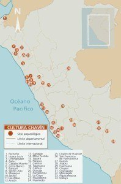
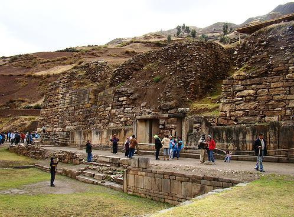
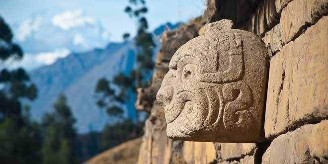

La Cultura Chavin, tuvo una gran expresión artística representados en las esculturas de su templo, las más relevantes fueron las Cabezas Clavas y el Lanzón Monolítico.
El sitio arqueológico de la cultura Chavin debe su nombre a la cultura que se desarrolló entre los años 1200 y 400 a.c en este valle alto de los Andes peruanos. Este antiguo lugar de culto es uno de los primeros y más conocidos sitios precolombinos. Su aspecto es llamativo, con el complejo de terrazas y plazas, rodeadas por estructuras de piedra labrada, y principalmente la ornamentación zoomórfica.
El pueblo de Chavin de Huántar, se encuentra ubicado en el Callejón de Conchucos en el lado oriental de la Cordillera Blanca, en la confluencia de los ríos Mosna y Huachecsa, afluentes del río Marañon; en el actual distrito de Chavin de Huántar, en la provincia de Huari, en la región Ancash en un valle alto de los Andes peruanos, a una altitud de 3.177 m se construyó cerca de una de las más antiguas conocidas y admiradas sitios prehispánicos. Este sitio da nombre a la Cultura Chavín, una de las antiguas civilizaciones de América del Sur, que se desarrolló aproximadamente entre 1500 y 300 aC. Se precedió a las primeras civilizaciones regionales, como las Culturas Salinar, Lima y Nazca. Visitado en forma regular por los viajeros durante el siglo XIX, Chavín fue excavado en 1919 por el arqueólogo peruano Julio C. Tello, cuyo trabajo contribuyó a la reputación internacional del sitio. En 1945, una buena parte de los monumentos estaban cubiertos por un deslizamiento de tierra desastroso. Por otra parte, Chavín fue afectada por un terremoto en 1970.
La Cultura Chavín fue una sociedad de clases, sacerdotes y guerreros acumulando recursos, mientras que las personas eran explotadas para producir más. La mayoría de negocios que destacaron en la comunidad terminaron convirtiéndose en líderes, jefes, oficiales. Estos líderes obligaron a la comunidad a producir más y terminan imponiéndose a los demás a través del conocimiento de la naturaleza «Sacerdotes.» Los líderes de la Cultura Chavín han logrado construir grandes edificios en honor de los dioses. La razón principal para el progreso de Chavín de Huantar fue una agricultura moderna, productiva e innovadora. Los sacerdotes: la casta sacerdotal eran los especialistas, científicos que dominaban la ciencia de la astronomía, lo que les dio una gran influencia y poder, técnicos agrícolas eran también geniales «ingenieros hidráulicos». Nobleza Guerrera: Fue el encargado de contener el embate de las invasiones y disturbios en las regiones de la cultura Chavín. La compañía mantuvo la hegemonía, ya sea para proteger su modus vivendi, tenía un ejército capaz de garantizar las condiciones necesarias para su desarrollo. El pueblo: Fueron las masas populares que tuvieron que pagar tributo a los dioses y gobernantes.
Los historiadores pueden concluir a través del arte de la cultura Chavín que había deidades adoradas, eran politeístas. La deidad principal es un animal de gran tamaño como las serpientes con pelo y colmillos largos, esto fue considerado para equilibrar las energías opuestas. Había varias otras deidades que fueron adoradas por el pueblo de la cultura Chavín, incluyendo una deidad representada por la comida a través de un caimán, y una deidad del inframundo ilustrado como una anaconda. Otra deidad popular, que es comúnmente asociado con varias otras culturas, tales como el antiguo Egipto, era el dios-gato. Poco se puede determinar sobre el dios-gato de acuerdo a la cultura Chavín, debido a las múltiples representaciones de felinos en otras sociedades religiosas antiguas.
Sus principales actividades económicas en el comienzo de la civilización de la cultura Chavín fueron la recolección de plantas silvestres y cazar animales. Los habitantes de la cultura Chavín tenían una agricultura muy desarrollada, el maíz que era su principal fuente de alimento así como la calabaza, el fréjol, el algodón, la papa, la quinua y el maní. Su ganadería se basa en la crianza de auquénidos como la llama, alpaca y cuyes.
Su arquitectura se caracteriza por la construcción de una serie de terrazas y plazas construidas con piedras unidas formando una compleja red de galerías, y la decoración esculpida de los megalitos adornados inmensos.El carácter predominante ceremonial y cultural del complejo Chavín todo está muy claro. El «proyecto arqueológico de Chavín«, que desde 1980 ha sido el foco de los esfuerzos conjuntos por parte de la Universidad Federico Villareal y la Fundación Volkswagen, ha hecho posible la reanudación de las excavaciones y salvaguardar el plan para el sitio bajo la supervisión del Instituto Nacionale de Cultura.
Las esculturas en bajo relieve sobre losas, dinteles y columnas se caracteriza por un repertorio esencialmente zoomorfos (jaguares, serpientes, cóndores, caimanes), al que se añaden los rostros humanos aquí y allá. Las Cabezas Clavas una especie de ménsula redondo grabado en las piedras de la pared (uno de los cuales sigue existiendo in situ en la pared del ‘Castillo’ en el flanco sur del templo) son una de las creaciones más apasionantes del arte monumental de la cultura Chavín.

López, Carlos y Aguilar, Julia (2012, 8 de septiembre). Cultura Chavín.
Historia del Perú. https://historiaperuana.pe/periodo-autoctono/cultura-chavin
Fan? Drop a note!